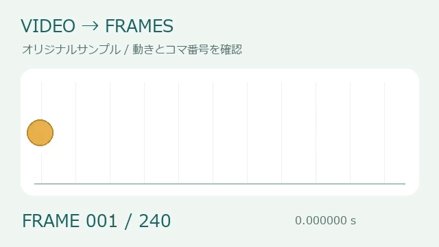
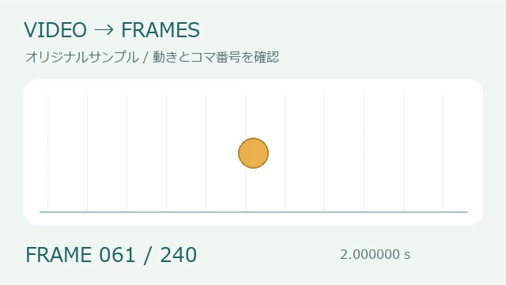
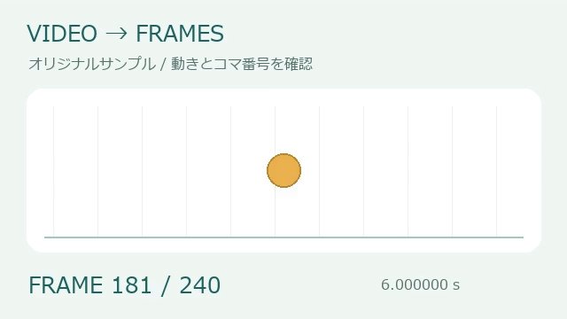

VIDEO → FRAMES
動画コマ分解
流れる一瞬を、
手に取れる一枚に。
動画をコマごとの画像に分解し、動きを見比べたり、必要な瞬間だけを選んで保存したりする無料ツールです。動画編集ソフトを開かずに、ブラウザ内でコマ送り・PNG/JPEG出力・ZIP保存まで行えます。
ブラウザの対応状況を確認しています…
動画を選ぶ
対応形式でも、映像の圧縮方式とブラウザによって読み込めない場合があります。まず短い動画でお試しください。
コマを確認する
コマ送りは実際のフレーム順です。音声は出力されません。
分解のしかた
拡大せず、縦横比を維持します。全フレームでも解像度は選択値までに縮小します。1回200枚・画像合計96MBまで。容量上限では途中分を残し、続きから再開できます。
切り出したコマ
左右にスクロールして、画像をタップして選択。離れたコマも自由に選べます。
選択した画像のZIPには、選んだコマだけの時刻表が入ります。次の分解で画像と選択状態は置き換わります。必要な画像は先に保存してください。「続き」は前回の範囲・出力設定を引き継ぎます。一覧画像は小さなコマを並べた確認用JPEGです。
QUICK GUIDE
一瞬を選ぶ。流れを並べる。
動きの研究に
「全フレーム」で、ダンスやアニメーションをコマごとに確認。200枚を超える動画も、続きを順番に取り出せます。
動画の見どころに
「指定間隔」で1秒ごとなどの画像を作り、一覧画像に。間隔の時刻以降にある最初のコマを選び、同じコマの重複は省きます。
欲しい瞬間だけ
スライダーと前後のボタンでコマ送り。「このコマを保存」で1枚だけ保存できます。
初めて使うときの手順
- 動画を選んで、最初のコマを確認
手元のMP4・MOV・WebMを選びます。まずは「サンプル動画で試す」でも操作できます。読み込み後に動画の大きさ・長さ・コマ数が表示され、スライダーと「前のコマ」「次のコマ」で実際の画像を確認できます。
- 必要な範囲と抽出方法を選択
動きを細かく追うなら「全フレーム」、全体の流れをつかむなら「指定間隔」を選びます。欲しいコマを表示して「このコマから開始」「このコマまで含める」を押すと、秒数を手入力せず範囲を指定できます。
- 分解して、横並びの一覧から画像を選ぶ
「画像に分解する」を押すと、最大200枚が一覧に並びます。左右にスクロールし、画像部分かチェックボックスをタップしてください。離れたコマも選択でき、選んだ画像には緑の枠と「選択中」が付きます。
- 選んだ画像をZIP保存
「選択した○枚をZIP保存」で、画像と選択分の時刻表がまとまります。全コマが必要なら「全画像をZIP保存」を使います。ZIPを展開して画像を確認してから、必要に応じて「続きの200枚」を処理してください。次の分解では画面上の結果が置き換わります。
REAL OUTPUT / オリジナルサンプル
8秒の動画から、3つの瞬間を選ぶ
丸が移動する640 × 360px・30fps・8秒の動画を、このページの動作確認用に制作しました。全240コマにコマ番号が入っているため、出力した画像がどの瞬間なのかを見比べられます。以下は実際にこのツールで抽出したPNGです。






同じ動画でも、目的で出力を変える
- すべての動きを調べる
- 「全フレーム」で開始0秒・終了8秒にすると対象は240枚。最初の200枚を保存し、「続きの200枚」で残り40枚を保存します。200枚に収めるための自動的な間引きは行いません。
- 全体を短時間で見渡す
- 「指定間隔」を1秒、開始0秒・終了8秒にすると、このサンプルでは0〜7秒の8枚になります。「全画像の一覧画像を保存」で小さなコマを1枚の画像にまとめられます。
- 必要な3枚だけを渡す
- 1秒間隔で取り出した一覧から、1・61・181コマ目を選択。0秒・2秒・6秒の3枚だけをZIP保存できます。選択した順番が前後しても、保存順は動画内の順番です。
実際の選択結果を保存：PNG 3枚＋時刻表CSV（ZIP） ↓
確認日：2026年11月3日。出力はPNG・640 × 360px。掲載画像は表示用に縮小しており、リンクから元のPNGを保存できます。サンプルは図形と文字で制作し、第三者の動画や個人情報は使用していません。
設定に迷ったら
「全フレーム」と「指定間隔」の違い
全フレームは、元動画に記録されたコマを順番に取り出します。例えば30fpsで一定の動画なら、1秒あたり約30枚です。短い動作の途中経過を見たいときに向いています。間隔指定は、指定した時刻以降にある最初のコマを選びます。0.1秒なら細かい変化、1秒なら大まかな流れを確認しやすくなります。
元動画に存在しないコマは作りません。間隔を元動画のコマ間隔より短くしても、同じコマの重複は省きます。可変フレームレートの動画ではコマの間隔が一定ではないので、正確な時刻は出力されたCSVで確認してください。
PNG・JPEG・画像の大きさ
| 形式 | 選びやすい用途 | 注意点 |
|---|---|---|
| PNG | 画面録画、文字、線画、図解を含む動画 | 写真中心ではファイルが大きくなる場合があります。 |
| JPEG | 写真や実写動画から大量に取り出すとき | 画質を下げると小さくなりやすい反面、細い文字や輪郭ににじみが出る場合があります。 |
長辺は、まず1,280pxから試してください。スマホで軽く確認するなら640px、細部を見たいなら1,920pxを選べます。ただし、小さい元動画を拡大して画質を上げる機能ではありません。例えば640 × 360pxのサンプルは、1,920pxを選んでも640 × 360pxのままです。
開始・終了時刻と200枚の考え方
開始の時刻は含み、終了の時刻は含みません。30fpsのサンプルで0〜1秒を指定すると、0秒から約0.966667秒までの30枚です。1秒ちょうどのコマも欲しい場合は、そのコマを表示して「このコマまで含める」を使うと分かりやすくなります。
1回の200枚制限と、画像合計96MBの制限は別々に適用します。枚数が200枚未満でも容量上限で止まることがあります。その場合は途中分を保存して続きを処理するか、長辺を小さくする・JPEGにする・範囲を短くする方法を試してください。「続き」は前回の出力設定を引き継ぐため、設定を変えたいときは範囲を指定し直して分解します。
ZIP・一覧画像・時刻表の使い分け
ZIPには、加工や再利用に使える個別の画像が入ります。一覧画像は小さなサムネイルを並べた確認用JPEGなので、細部の確認や元の解像度での再利用には個別画像を使ってください。時刻表CSVには元動画のコマ番号、最初のコマからの秒数、元の表示時刻、継続時間、画像名が入ります。選択した画像だけのZIPでは、CSVの行も選択した画像だけになります。
うまくいかないとき・よくある質問
MP4なのに読み込めません
MP4は動画を入れる形式の名前で、内部の映像の圧縮方式まで同じとは限りません。同じ拡張子でも端末やブラウザによって復元できない動画があります。最初にサンプル動画が開けるか確認してください。サンプルは開けて手元の動画だけが開けない場合は、別の対応ブラウザや、H.264方式のMP4に変換したコピーでお試しください。
処理が重い・止まってしまいました
まず「処理を中止」を押し、抽出済みの結果があれば保存してください。長辺640px、短い範囲、JPEGの組み合わせから試すと負荷を抑えられます。200枚でも端末の空きメモリによっては処理できない場合があります。再読み込みやタブを閉じる操作では結果が失われるため、保存できるものを先に保存してください。
選択した画像がZIPに入っていません
緑の「選択中」と選択枚数を確認し、「選択した○枚をZIP保存」を使ってください。画像の下の「画像を保存」は、その1枚だけを保存するリンクです。次の抽出・続きの処理・結果の消去では選択状態がリセットされます。選択は現在画面にある抽出結果の中で行います。
動画の再生画面と、明るさや色が違います
このツールは通常のSDR画像として出力します。HDR動画や特殊な色空間では、元のプレーヤーと同じ見え方にならない場合があります。また、ピントのずれや被写体のぶれを取り除く機能はありません。保存した画像を開いて、用途に合う見え方か確認してください。
動画や画像はサーバーに保存されますか？
動画の解析・抽出は端末内で行い、選んだ動画と抽出画像を当サイトのサーバーに送信・保存する機能はありません。作業結果の自動バックアップもないため、必要な画像はダウンロードしてください。サイト閲覧時の広告やアクセス解析などの外部通信については、プライバシーポリシーで説明しています。
「全フレーム」と200枚の制限について
対応する映像トラックを表示時刻順に読み出します。再生中のスクリーンショットや固定FPSでの推測ではありません。可変フレームレートにも対応し、元の表示時刻・継続時間をZIP内のCSVに記録します。開始を含み終了を含まない範囲を、最大200枚ずつ処理します。
200枚だけではメモリ消費は保証できないため、入力512MB・12万コマ、入力解像度は長辺4,096pxかつ約884万画素以下、出力長辺1,920px、保持画像96MBまでに制限しています。画像は1枚ずつ処理し、復元済みの映像データを解放します。高解像度・長い動画や端末の空きメモリによっては、さらに小さい範囲と640pxを選んでください。
対応ブラウザ・画質・読み込めない動画
HTTPSまたはローカル環境でWebCodecsに対応したブラウザが必要です。MP4・MOV・WebMに対応しますが、圧縮方式の対応は端末によって異なります。未対応の動画を「全コマ抽出済み」と表示することはありません。保護された動画や壊れたファイルは扱えません。
通常のSDR画像として保存します。HDRの明るさや色、特殊な色空間、インターレースのフィールドを元のまま保存する用途には向きません。複数の映像トラックがある場合は主映像1本を対象にします。編集で非表示になったコマがファイルに残っている動画では、再生画面と抽出範囲が異なる場合があります。時刻の0秒は、読み出した最初のコマを基準にしています。動画・抽出画像をサーバーに送信しません。
動画の権利や映り込む人のプライバシーに配慮してご利用ください。プライバシーポリシー / 不具合の報告
動画解析：Mediabunny（MPL-2.0、ソースコード）